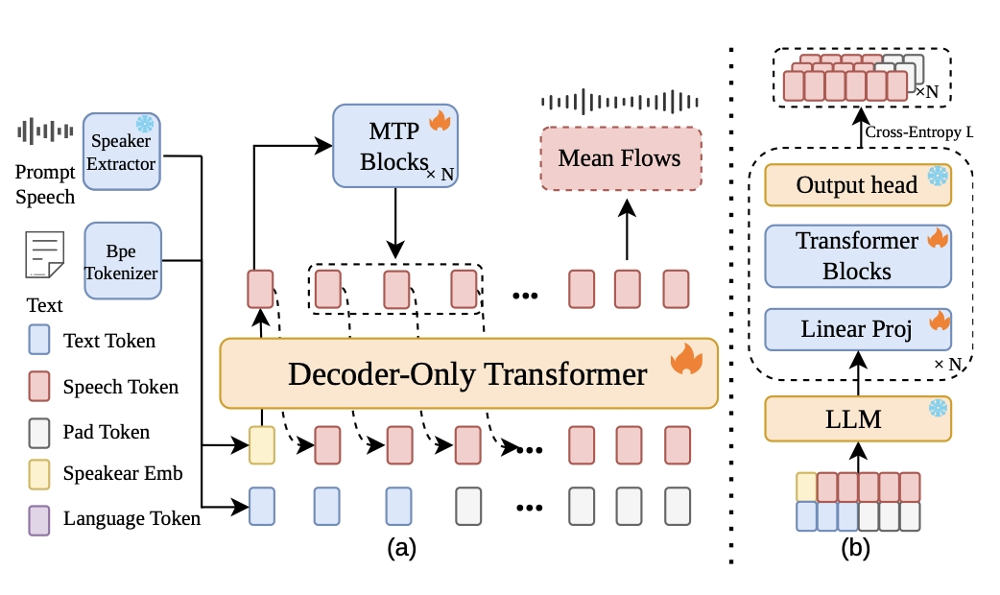

FlashTTS:
Fast Streaming TTS with MTP Acceleration and X-pred Mean Flow Distillation
Abstract Recent progress in speech dialogue systems requires Text-to-Speech (TTS) models to be faster and more responsive. Modern speech dialogue systems impose two primary requirements on TTS models: low latency and support for streaming inputs and outputs. However, most existing single-codebook LLM-based TTS methods rely on multi-stage pipelines that lack native streaming capabilities. These systems typically suffer from high end-to-end latency due to slow autoregressive prediction and multi-step flow matching. To address these limitations, we propose FlashTTS, an open-source and low-latency streaming TTS framework. FlashTTS introduces a lagged multi-track architecture that natively processes streaming text and speech inputs, thereby eliminating the need for sentence-level buffering. To accelerate acoustic generation, we integrate parallel Multi-Token Prediction (MTP) with an X-pred mean flow matching decoder. This configuration achieves high-fidelity token-to-mel generation in exactly two function evaluations (2-NFE). By jointly optimizing input processing and decoding efficiency, FlashTTS offers a practical foundation for real-time speech dialogue systems. Experiments show that FlashTTS substantially reduces First-Packet Latency to 325ms compared to robust streaming baselines, all while preserving strong zero-shot voice cloning and cross-lingual intelligibility. Speech samples are available. The model code and checkpoints will be released as open source.
Contents
This page is for research demonstration purposes only.
Model Overview

Figure 1. Architecture Overview of FlashTTS: (a) Stage 1 Training of the Stacked Inputs Track Structure. (b) Stage 2 MTP Training.
Multilingual TTS Demo
Chinese / English / French / German / Japanese / Korean · Prompt is the reference voice
All prompt texts in this demo are sampled from the MiniMax internal test set.
| Language | Prompt | Text | Generation |
|---|---|---|---|
| Chinese | 我只想和你一起，看遍这世界的美好。 | ||
| Chinese | 早上好，你今天看起来气色很好，是不是有什么好事发生了？ | ||
| English | I guess it comes down a simple choice. Get busy living or get busy dying. | ||
| English | The culinary tour introduces visitors to hidden neighborhood restaurants where local chefs prepare authentic regional specialties. | ||
| French | Alors Cécile, j'ai entendu dire que vous aviez approché pour faire un film aux États-Unis. | ||
| French | On peut donner bien des choses à ceux que l'on aime. Des paroles, un repos, du plaisir. | ||
| German | Guten Morgen! Wie geht es Ihnen heute? | ||
| German | Guten Morgen, wie geht es dir heute? Ich hoffe, du hast gut geschlafen und bist voller Energie. | ||
| Japanese | 人に見返りを求めてはいけない。求めなければ、誰かを憎むことも蔑むこともない。それが生きていく上で一番大事なことだ。 | ||
| Japanese | この映画、とても面白かったです。 | ||
| Korean | 내 나이 아홉살 처음 알게 된 사실이 잇었다. 생일 초를 끄기 전에는 소원을 빌어야 한다는 것. | ||
| Korean | 이제부터 함께하는 이 소설은 "꿈의 세계로 여행하기"라는 제목입니다. |
Celebrities Characters
Each example uses a short prompt audio plus a target text to synthesize the target celebrity voice.
| Character | Prompt Audio | Target Text | Generated Audio |
|---|---|---|---|
| 华妃 (Huafei) | 处理家庭秘密从来都不是一件容易的事。然而，有时候，隐瞒是一种保护形式，旨在保护一些人免受残酷的真相伤害。有一天，我希望你能理解我行为背后的原因。在那之前，安娜，请容忍我。 | ||
| 八戒 (Bajie) | 有一种撕心裂肺的感觉，是辣椒，我加了辣椒！ | ||
| Morty | Then I would never talk to that person about boa constrictors, or primeval forests, or stars. I would bring myself down to his level. | ||
| Trump | Then I would never talk to that person about boa constrictors, or primeval forests, or stars. I would bring myself down to his level. |